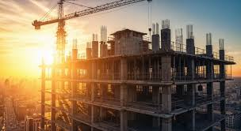

Proposta tecnològica
Eines digitals:
ERP i CRM (Holded): Un sistema integral per controlar de forma visual els estocs de ciment o totxanes, assignar les hores del personal a cada obra i gestionar els pressupostos de nous clients potencials.
Cloud (Microsoft Azure): Infraestructura al núvol segura per emmagatzemar bases de dades de proveïdors, plànols tècnics i fotos de projectes accessibles en temps real des de qualsevol tauleta a l'obra.
Automatització (Microsoft Power Automate): Fluxos intel·ligents per generar i enviar la factura al client de forma totalment automatitzada un cop es signa l'entrega de l'obra digitalment.
Canvis en els processos: El paleta ja no porta una llibreta, sinó una App connectada on marca l'inici i final de la jornada i els materials consumits directament a l'obra.
Exemples: Ús de Google Workspace per al correu i calendari d'obres, i Nextcloud per guardar les fotos de les reformes de forma segura i privada.
